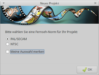
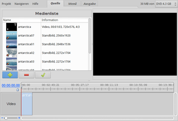
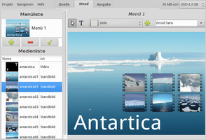
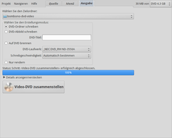

Bombono
Dieser Artikel wurde für die folgenden Ubuntu-Versionen getestet:
Ubuntu 14.04 Trusty Tahr
Zum Verständnis dieses Artikels sind folgende Seiten hilfreich:
Bombono DVD  ist ein einfach zu bedienendes und leistungsfähiges GTK-Programm zum Erstellen von Video-DVDs. Angeboten werden die Aufteilung in Kapitel, das Erstellen der Menüstruktur und wahlweises Brennen des Projekts auf DVD. Seit Version 1.0 kann Bombono auch transcodieren.
ist ein einfach zu bedienendes und leistungsfähiges GTK-Programm zum Erstellen von Video-DVDs. Angeboten werden die Aufteilung in Kapitel, das Erstellen der Menüstruktur und wahlweises Brennen des Projekts auf DVD. Seit Version 1.0 kann Bombono auch transcodieren.
Die wesentlichen Eigenschaften von Bombono DVD sind:

Hervorragender MPEG-Betrachter: Timeline und Monitor
WYSIWYG-Menü-Editor mit Live-Miniaturansichten
Drag'n'Drop
Transkodierfunktion, verarbeitet die Formate AVI, MKV, MOV und MPEG4
Menüeditor mit Animationen
Unterstützung für Untertitel
Ausgabe in ein Verzeichnis, als ISO-Abbild oder auf DVD brennen
Videos von DVDs importieren
Voraussetzung zur erfolgreichen Nutzung sind Grundkenntnisse beim Mastern von Video-DVDs.
Installation¶
 Folgendes Paket muss installiert [1] werden:
Folgendes Paket muss installiert [1] werden:
bombono-dvd (universe)
 mit apturl
mit apturl
Paketliste zum Kopieren:
sudo apt-get install bombono-dvd
sudo aptitude install bombono-dvd
Bedienung¶
Hinweis:
Videos müssen vor der Bearbeitung im Format MPEG2, in DVD-Auflösung (720x576) und mit NAV-Paketen versehen vorliegen.

Nach der Installation kann das Programm bei Ubuntu-Varianten mit einem Anwendungsmenü über "Multimedia -> Bombono DVD" oder mit dem Befehl bombono-dvd gestartet werden [2]. Beim ersten Programmstart wird man gebeten, die jeweilige Fernseh-Norm (in Europa: PAL/SECAM) festzulegen. Die hier gemachten Angaben können später unter "Projekt -> Einstellungen" wieder geändert werden.
In der Menüleiste befinden sich nur drei Punkte:
"Projekt" - Verwaltung wie Speichern oder Öffnen einer Projektdatei (.bmd). Darüber hinaus kann eine vorhandene DVD-Struktur importiert werden.
"Navigieren" - siehe unten
"Hilfe" - Informationen zur Programmversion
Interessanter sind die Menüeinträge von "Navigieren", die auch als separate Reiter rechts vom Menü sichtbar sind:
"Quelle" - Video- und Audiodateien hinzufügen bzw. entfernen
"Menü" - Menüeditor (für Optionen Kontextmenü
 nutzen)
nutzen)"Ausgabe" - Angaben zum Export. Hier befindet sich auch die Schaltfläche "Video-DVD zusammenstellen", mit der der Exportvorgang gestartet wird.
Als Zwischenspeicher dient der Ordner ~/.cache/bombono-dvd-video/, der später einen weiteren Unterorder dvd/ mit dem Ergebnis enthält (falls man beim Export die Einstellung "DVD-Ordner schreiben" auswählt). Diesen Ordner sollte man tunlichst beibehalten und nicht etwa in ~/Videos/ ändern, da der komplette Ordnerinhalt bei jedem Exportvorgang gelöscht wird!
Weitere Details und eine gute Anleitung Schritt-für-Schritt findet sich im unten genannten Tutorial.
|  |
| Quelldateien |
|  |
| Menü-Editor |
|  |
| Ausgabe |
Einstellungen¶
Informationen zur Fernseh-Norm und weitere Angaben werden im Ordner ~/.config/bombono-dvd/ im Homeverzeichnis gespeichert.
Links¶
Menü mit drei Gängen – DVDs erstellen mit Bombono
 - Linux User, 11/2009
- Linux User, 11/2009DVD-Authoring
 Programmübersicht
Programmübersicht

- Erstellt mit Inyoka
-
 2004 – 2017 ubuntuusers.de • Einige Rechte vorbehalten
2004 – 2017 ubuntuusers.de • Einige Rechte vorbehalten
Lizenz • Kontakt • Datenschutz • Impressum • Serverstatus -
Serverhousing gespendet von